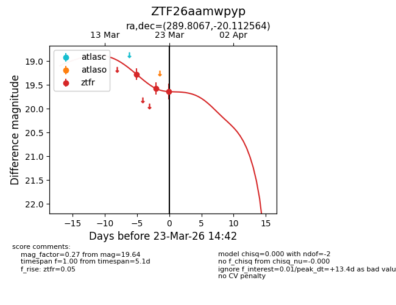
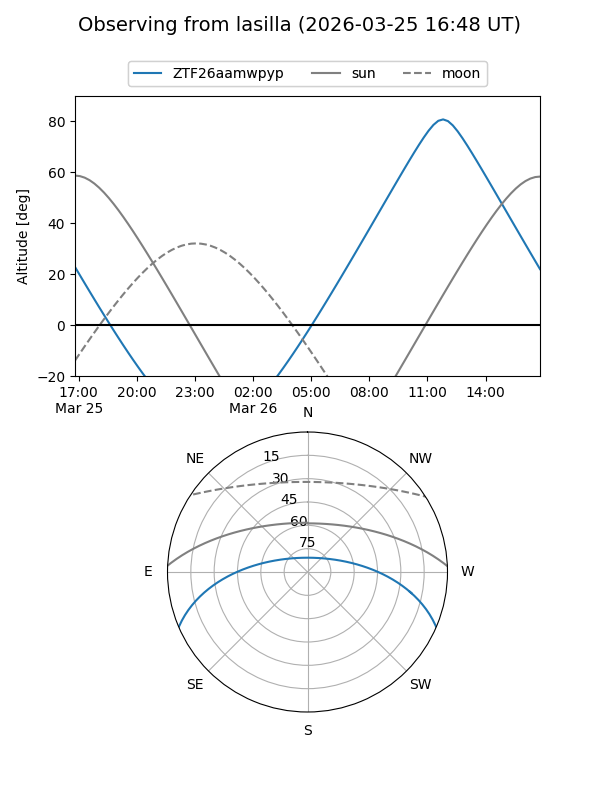
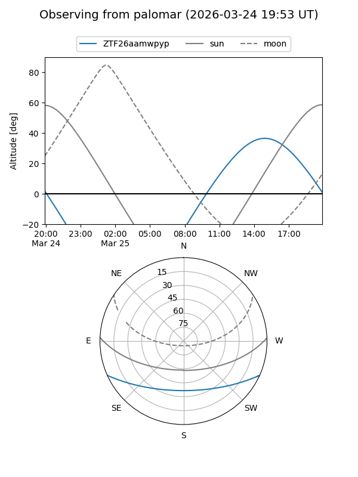
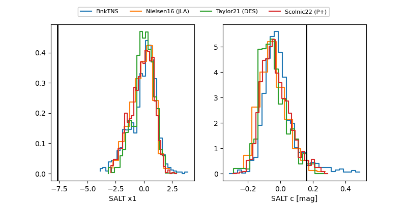

ZTF26aamwpyp
Target ZTF26aamwpyp at 2026-03-23 14:44
Aliases and brokers:
FINK: link
Lasair: link
ALeRCE: link
alt names
ZTF26aamwpyp (ztf,fink_ztf)
Coordinates:
equatorial (ra, dec) = 289.8067,-20.11256
equatorial (HMS+DMS) = 19:19:13.60,-20:06:45.23
galactic (l, b) = (17.6751,-14.94433)
Flags:
Photometry:
last ztfr=19.64
3 ztfr detections
Lightcurve

Visibility


Additional plots
